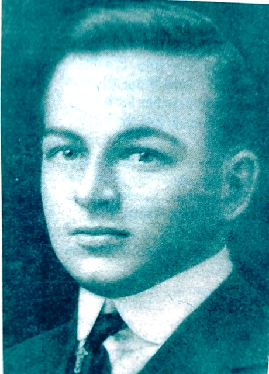
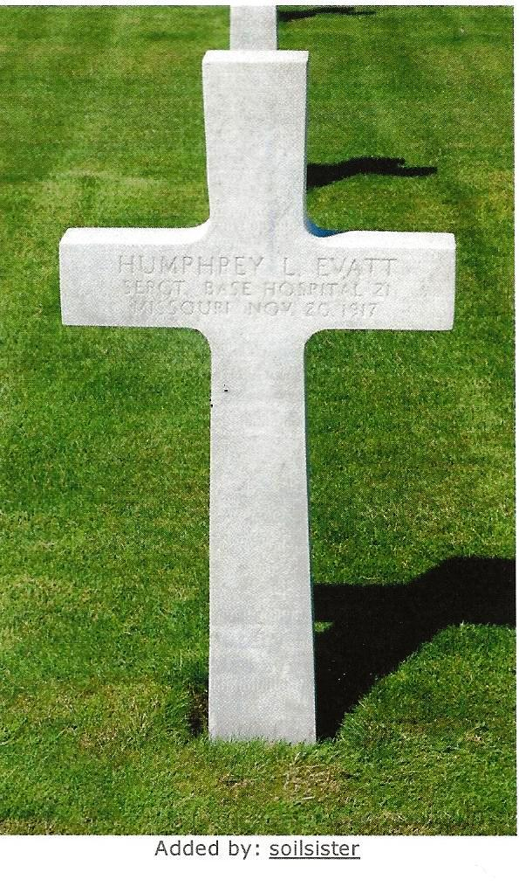
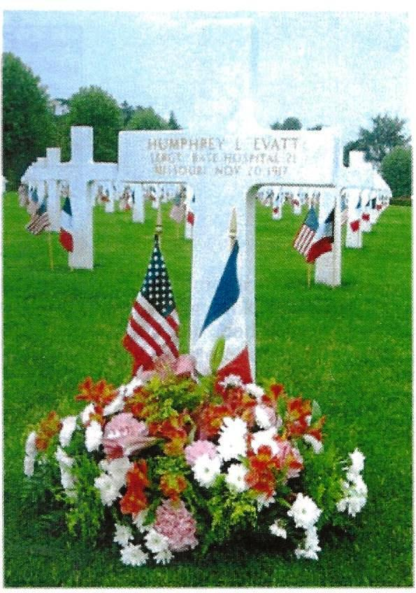
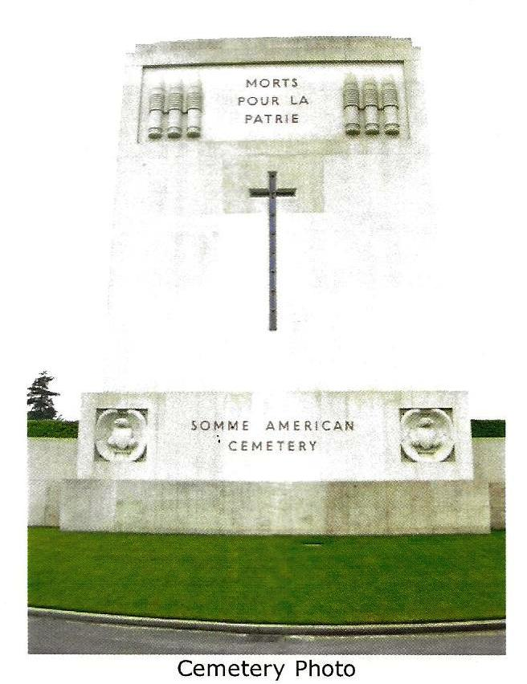

Humphrey Leighton Evatt
1894–1917

From Belleville News-Democrat, Memorial Day 2006
by Teri Maddox, from research by Gene Beals
Thousands of people drive by the American Legion Post 365 in Collinsville each day. They see the sign "Leighton Evatt Post 365" but most don't have a clue as to who Evatt was. Even Post leaders had only sketchy information until local military historian Gene Beals completed a research project on Evatt.
Leighton Evatt was the first person from Collinsville, IL to die in World War I. The American Legion was formed by World War I veterans and most Posts were named after the first to die from their communities.
Humphrey Leighton Evatt was born in Wisconsin in 1894. He lived in Missouri and Kansas before moving to Collinsville about 1912 with his parents, the Reverend Robert and Lottie May Evatt. His father was an Episcopal rector.
Evatt's parents left for Pennsylvania in 1913, but he stayed in Collinsville and boarded with the Pausch family. He worked as a clerk at St. Louis Smelting and Refining Company.
His nickname was "Tubby" and he wasn't in the military when WW1 broke out. He wanted to be a doctor and attended Barnes Medical College in St. Louis.
Evatt enlisted in Base Hospital Unit 21 on May 11, 1917, along with more than 200 other medical students, doctors, and nurses. These units were formed by the American Red Cross all over the United States because of the shortage of doctors on the Western front. They paid for everything for these guys.
Evatt's unit boarded a ship in New York City and arrived in Liverpool, England, on May 28, 1917. Members received only 2 weeks of basic training.
Their battlefield hospital was established in tents at Champs des Courses race track in Rouen, France. Evatt died of pneumonia on November 20, 1917. The 23-year-old sergeant is buried at the Somme American Cemetery in Bony, France.
Leighton Evatt Post 365 was formed December 24, 1919. People come to the Post all the time and ask "Who was he?" We have a picture and his credentials hanging in the hall.
Local military historian Gene Beals completed this research project on Evatt and was pleasantly surprised while doing research at the Missouri Historical Society in St. Louis. He learned that Evatt had been honored along with other veterans in the Gold Star Tree Court of Honor in the 1920s.
In 1960, they put the Mark Twain Expressway through there and tore everything up. The stars were thrown into drums and left in a North St. Louis warehouse.
In 1987 the drums were moved to the basement of the Soldiers Memorial in downtown St. Louis. Beals found Evatt's star slightly dented and presented it to Post 365. It is now attached to the monument out front of the Post.
Burial:
Somme American Cemetery and Memorial
Bony, Department de L'Aisne, Picardie, France


